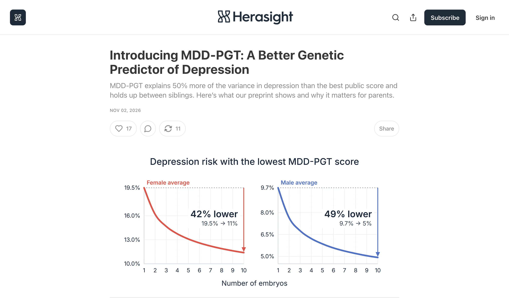

What really is a gene score for picking embryos? whatreally.is/a-gene-score-for-picking-embryos
Herasight scores embryos for depression risk, but whichever embryo you pick grows up in the same lonely, sleepless world that sets it off.
A parent backing the child most likely to carry their line takes the cheapest, one-off route, a lab score, instead of the hard work of fixing the world the child will live in; the seller prices that in.

Screenshot: Herasight (Substack), 2 Nov 2026
The source. Introducing MDD-PGT: A Better Genetic Predictor of Depression
The Herasight team is pleased to announce MDD-PGT, our new genetic predictor of major depressive disorder (MDD), which is now available to couples undergoing IVF who want to lower their future child’s risk of depression.
HerasightChildren with higher MDD-PGT scores more often reported that other kids spread rumors about them or threatened them, and that they felt lonely or worthless.
HerasightTheir parents more often reported that their child’s emotions felt overwhelming and that the child slept badly and was sleepy during the day.
HerasightTaken together, though, they show that genetic risk for depression shows up in everyday life long before adulthood, in how children get on with their peers, how they cope with strong emotions and how well they sleep.
Herasight
The claims
How strongtested many timestested onceseen in animalsargued, not yet testedcontested
- 1
- 2
- 3
- 4
Our genes haven’t changed in ten years, and teen girls’ sadness jumped 21 points in that time.
GAP: no Cor record yet
- 5
The genes that make us get low have never stopped us having children.
GAP: no Cor record yet
- 6
Every side of this fight treats our low moods as a defect.
GAP: no Cor record yet
Depression score on the embryo
Paying up to $50,000 to screen embryos for depression runs on one of the oldest instincts parents have, backing the child most likely to give them grandchildren, and a lab is easier than fixing the world. Humans still run the program they ran for 300,000 years, where low mood is how you handle trouble with your people: pull back, ask for help, and chew on the problem until it’s solved. Now a 13-year-old girl gets her looks judged by millions of strangers on the phone she sleeps next to, and nobody sells a test for that.
Herasight’s headline is a 50% gain, and its own numbers shrink it. The score explains 9.1% of the variance in depression liability after correction and 7.0% before, and the company admits each association is small for any one child. The study is the seller’s own preprint, launched with the product, with the methods still to come.
What the score finds in children is a social life going wrong. Kids with higher scores more often say other kids spread rumours about them or threaten them, and that they feel lonely or worthless, and their parents report bad sleep. Where no physical cause is found, low mood is how humans react to trouble with their people: pull back, ask for help and chew the problem over with them. The sibling test shows which child in one home gets low more easily, and it says nothing about what the school and the phone do to both of them.
The chain starts at home: two adults now expect to raise a child mostly alone, where fathers, grandmothers and older kids once carried and fed it, so every risk to the child lands on the couple. The sum is simple: one purchase and a lab report, against years of fixing the child’s peers, sleep and help at home, so parents buy the gene score once before pregnancy. The lowest scoring embryo still grows up in the same class and the same feed.
Source: herasight.substack.com, 2 Nov 2026
What they say it is
Depression is one of the most common and most disabling health conditions.
Herasight, the seller
Major depressive disorder is a common, disabling, heritable health condition, and choosing the embryo with a lower MDD-PGT score lowers your child’s risk.
What it really is
Parents back the child most likely to make it, and Herasight sells them a score on how easily a kid gets low while the world that sets the low mood off stays the same.
What they get wrong. It reads the rumours, threats, loneliness and bad sleep in its own data as genes showing up early, when those are the conditions the low mood reports on.
Which system wins
Every brain system that could explain this, oldest at the top. The longer the bar, the more of the source it explains. The longest bar is the top score.
- What is at stake
- Details explained
- Distance from the camp
- Winner
-
Teen girls ranked on looks by strangers
0.56
-
Winner Parent betting on offspring
0.67
-
Low mood is how we handle trouble with our people
0.39
Why it wins. Parent betting on offspring explains 4 of the 8 details in the source and sits on reproduction. It also has the top score.
Note: Score = 0.571 x what is at stake (survival 1, reproduction 0.67, standing 0.33) + 0.286 x share of details explained + 0.143 x distance from the camp. Phylogenetic age adds no points; it orders the stack and settles near-ties.
Source: Cor
How do we know?
The claims
A human child needs years of care and food from others, so mothers evolved to weigh whether they could carry a child through before committing fully, judging the infant’s condition, the food around and the help they had.
- tested many timesEEA-CARE-01
- argued, not yet testedE281 Hrdy 1999E402 Hrdy 2009E271 Hrdy 1999
For most of human history fathers, grandmothers, older children and other helpers held, carried and fed infants.
- tested many timesEEA-CARE-01
- tested onceE700 Tronick et al. 1987E750 Crittenden & Marlowe 2008
- argued, not yet testedE271 Hrdy 1999E22 Hrdy 2009
Herasight’s score explains 9.1% of the variance in depression liability after correction and 7.0% before, and its headline is a 50% gain over a public score.
- Sourcethe source
Children with higher scores more often report rumours, threats, loneliness and feeling worthless, and their parents report bad sleep and daytime sleepiness.
- Sourcethe source
Low mood shows up among Tsimane forager-horticulturalists who lack the industrial risk factors usually blamed for it, which fits low mood as a normal signal on social triggers rather than a modern defect.
Twin studies put the heritability of depression liability near 37 percent, a figure measured within one environment that says nothing about what a changed environment does.
Siblings of people diagnosed with depression had slightly more children than average, so the genes being screened out have not been a dead end for having children.
- tested onceE882 Power et al. 2013
For most of human history, word about who did what and who to trust came face to face from people you knew.
- tested onceE720 Wiessner 2014
- argued, not yet testedEEA-INFO-01
What cuts against it
Some researchers dispute that humans are cooperative breeders. A later review found most natural-fertility studies do not support the grandmother effect, and fathers improved child survival in only a third of studies. Contingent maternal commitment rests on one author’s synthesis.
Nesse places psychotic depression and mania, which have no validated biomarker, in a separate class of broken mood regulation. Cor records this as a challenge and applies the biomarker line.
Twin heritability of major depression liability is 37 percent, and 42 percent in women and 29 percent in men. This supports a real heritable sensitivity and limits any reading in which the environment alone explains who tips into low mood.
The source reports a within-family to population ratio of 1.03, so the score’s power is not mainly family background. Heritability is still a statistic within one environment distribution, so this does not show what a changed environment would do.
- tested many timesE880 Sullivan et al. 2000
Within families, higher scores go with hypertension, type 2 diabetes and heart findings. Where chronic wear has a measurable physical cause, that part sits on the physical side of the biomarker line and the low mood is its symptom. The source does not test this.
Reading modern reproductive restraint as a mismatch assumes genetic fitness is the measure, and that reading is theoretical.
- argued, not yet testedE410 Richerson & Boyd 2005
Not in Cor yet
Picking the lowest score among the few embryos of a typical IVF cycle gives only small absolute drops in risk for common conditions, because sibling embryos differ little in score.
Study: Karavani et al. 2019, Cell; Turley et al. 2021, New England Journal of Medicine
The share of US high school girls reporting persistent sadness or hopelessness rose sharply across the 2010s, faster than any change in the gene pool.
Study: CDC Youth Risk Behavior Survey trend reports, 2011 to 2021
Peer victimisation predicts child and adolescent depressive symptoms, with effects partly dependent on genetic sensitivity.
Study: Gene-environment interaction studies of peer victimisation and depression, for example Benjet et al. 2010
For most of human history parents decided how much to invest in a child after birth, with a camp of helpers weighing in.
Study: Tier 2: ethnographic review of forager parental investment decisions after birth (for example Hrdy 1999 primary sources, Daly and Wilson 1988)
Low mood pulls effort away from goals that cannot be reached and toward routes that pay.
Study: Nesse 2000 and Nesse 2019 records, to be cited from the analysis on the next run
Grades are Cor’s. Every id opens its Cor page.
Sources
- herasight.substack.com, 2 Nov 2026. Introducing MDD-PGT: A Better Genetic Predictor of Depression. The source decoded here.
- Barrett (2017). How Emotions Are Made: The Secret Life of the Brain.
- Crittenden & Marlowe (2008). Allomaternal care among the Hadza of Tanzania.
- Hrdy (1999). Mother Nature: A History of Mothers, Infants, and Natural Selection.
- Hrdy (2009). Mothers and Others: The Evolutionary Origins of Mutual Understanding.
- Kachel et al. (2011). Grandmothering and natural selection.
- Kendler et al. (2006). A Swedish national twin study of lifetime major depression.
- Kramer (2010). Cooperative breeding and its significance to the demographic success of humans.
- McEwen (1998). Protective and damaging effects of stress mediators.
- Nesse (2019). Good Reasons for Bad Feelings: Insights from the Frontier of Evolutionary Psychiatry.
- Power et al. (2013). Fecundity of patients with schizophrenia, autism, bipolar disorder, depression, anorexia nervosa, or substance abuse vs their unaffected siblings.
- Richerson & Boyd (2005). Not by Genes Alone: How Culture Transformed Human Evolution.
- Sear & Mace (2008). Who keeps children alive? A review of the effects of kin on child survival.
- Stieglitz et al. (2015). Depression as sickness behavior? A test of the host defense hypothesis in a high pathogen population.
- Stieglitz et al. (2015). Functional disability and social conflict increase risk of depression in older adulthood among Bolivian forager-farmers.
- Sullivan et al. (2000). Genetic epidemiology of major depression: review and meta-analysis.
- Tronick et al. (1987). Multiple caretaking of Efe (Pygmy) infants.
- Wiessner (2014). Embers of society: Firelight talk among the Ju/‘hoansi Bushmen.